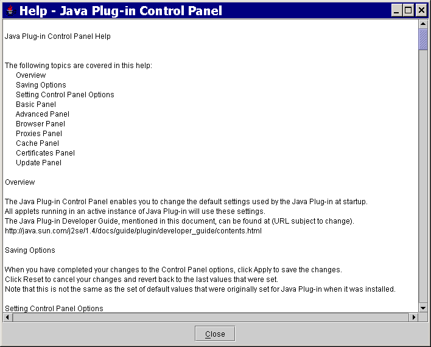
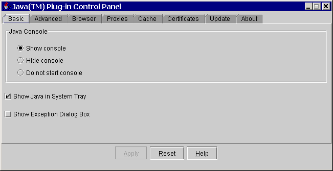
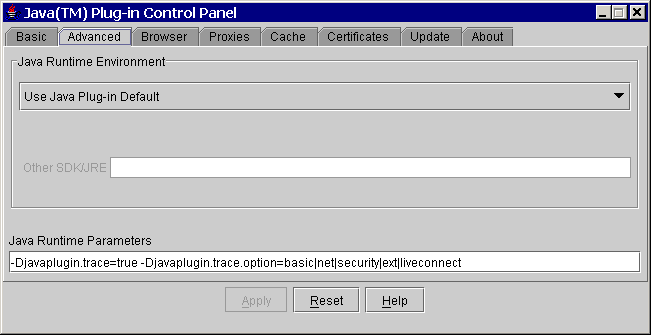
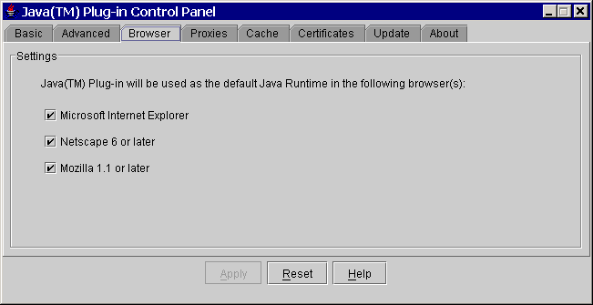
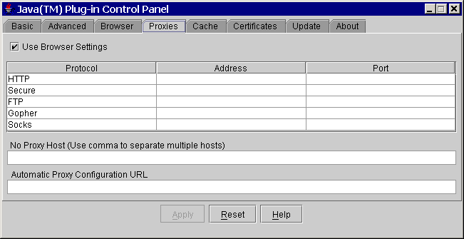
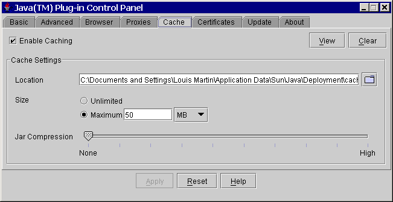
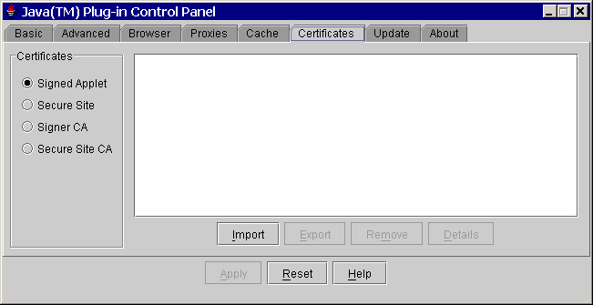
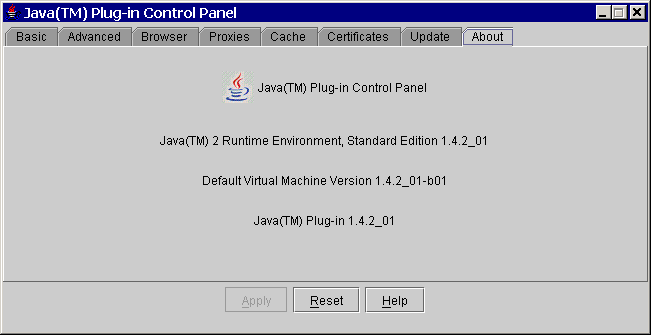

This section covers the following topics:
The JavaTM Plug-in Control Panel enables you to change the default settings used by the Java Plug-in at startup. All applets running in an active instance of Java Plug-in use these settings.
On Windows: From the Windows Control Panel, double-click the Java coffee-cup icon labeled Java Plug-in to launch the Java Plug-in Control Panel.
On Solaris and Linux: You can run the Control Panel by launching the ControlPanel executable file. In the Java 2 SDK, this file is located at:
<SDK installation directory>/jre/bin/ControlPanel
It is also located at:
<SDK installation directory>/bin/ControlPanel
For example, if your Java 2 SDK is installed at /usr/j2se, launch the Control Panel with this command:
In a Java 2 Runtime Environment installation, the file is located at:/usr/j2se/jre/bin/ControlPanel
You can also use Netscape to visit the Control Panel applet page, which was installed inside the JRE directory as the file ControlPanel.html. In the Java 2 SDK this file is located at:<JRE installation directory>/bin/ControlPanel
In the JRE:<SDK installation directory>/jre/ControlPanel.html
<JRE installation directory>/ControlPanel.html
When you have completed your changes to the Control Panel options, click Apply to save the changes. Click Reset to cancel your changes and reload the last values that were entered and applied. Note that this is not the same as the set of default values that were originally set for Java Plug-in when it was installed.
Help for Java Plug-in is available from any panel in the Control Panel. Help comes up in its own window in response to pushing the Help button and looks like this:

There are eight sub-panels (tabs) in the Java Control Panel. From six of them you can set various options. The panels are labeled:
Each is described separately below.
NoteThe settings shown for check boxes and radial buttons in each panel below, with the exception of the Browser panel, are the default (installation) settings. The check boxes for the Browser panel are determined according to user selection during installation. |
The Basic panel looks like this:

Use the Basic panel to set the following options:
Displays the Java Console while running applets. The console displays messages printed by System.out and System.err objects. It is useful for debugging problems.
The console is running but hidden. This is the default setting (checked).
The console is not started.
The Show Java in System Tray option indicates to the user that a Java VM is running; it provides control over the Java Plug-in Control Panel and Java Console; and it provides information about the Java release. When enabled and Java Plug-in is started, the coffee-cup logo displays in the system tray. When Java Plug-in is shutdown, the icon is removed from the system tray. This option is enabled by default (checked).
Note
If Show Java in System Tray is checked, the icon will show up in the system tray even if Do not start console is selected.
When Java Plug-in is first started and the mouse is pointed at the icon, a balloon toll tip will appear saying "Java 2 Standard Edition" along with a clickable link to http://java.sun.com/getjava. Thereafter, until Java Plug-in is shut down, when the mouse is pointd at the icon, a text box will say "Java 2 Standard Edition."
When the system tray icon is left-double-clicked, the Java Plug-in Control Panel will appear. If it is already open, a second Java Plug-in Control Panel will appear. When the system tray icon is right-clicked, a popup menu will appear with following menu items:
- Open Control Panel
- Open/Hide Console
- About Java Technology
- Hide Icon
Open Control Panel opens the Java Plug-in Control Panel. If it is already open, a second Java Plug-in Control Panel will appear.
Open/Hide Console: Open Console opens the Java Console if it is closed; Hide Console hides the Java Console if it is open.
About Java Technology brings up the About - Java box.
Hide Icon removes the icon from the system tray until the user re-enables it and Java Plug-in is restarted (i.e., the browser is closed, then reopened on a page with an applet).
Note:
To re-enable the icon, start the Java Plug-in Control Panel, check Show Java in System Tray, and press Apply.
Show an exception dialog box when exceptions occur. The default setting is hide the exception dialog box (unchecked).
The Advanced panel looks like this:

Use the Advanced panel to set the following options:
Enables Java Plug-in to run with any Java 2 JRE or SDK, Standard Edition v 1.4 installed on your machine. Java Plug-in 1.4 is delivered with a default JRE. However, you can override the default JRE and use an older or newer version in the 1.4 family. The Control Panel automatically detects all versions of the Java 2 SDK or JRE installed on your machine, and it displays in a list box all versions which you can use. The first item in the list will always be the Java Plug-in default; the last item will always say Other. If you choose Other, you must specify the path to the Java 2 JRE or SDK, Standard Edition v 1.4 that you wish to use. Only advanced users should change this option.
NoteOnly advanced users should change this option. Changing the default JRE is not recommended. |
You can override the Java Plug-in default startup parameters by specifying custom options in the Java Runtime Parameters field. The syntax is the same as used with parameters to the java command line invocation. See the Java 2 Standard Edition (J2SE) documentation for a full list of command line options. The URL below is subject to change:
http://java.sun.com/j2se/1.4/docs/tooldocs/<platform>/java.htmlwhere
<platform>is one of the operating systems: solaris, linux, windows.Below are some examples of Java runtime parameters
Enabling and disabling assertion support
To enable assertion support, the following system property must be specified in the Java Runtime Parameters:
-D[ enableassertions | ea ][:<package name>"..." | : <class name> ]To disable assertion in the Java Plug-in, specify the following in the Java Runtime Parameters:
-D[ disableassertions | da ][:<package name>"..." | : <class name> ]See Assertion Facility for more details on enabling/disabling assertions.
Assertion is disabled in Java Plug-in code by default. Since the effect of assertion is determined during Java Plug-in startup, changing assertion settings in the Java Plug-in Control Panel will require a browser restart in order for the new settings to take effect.
Because Java code in Java Plug-in also has built-in assertion, it is possible to enable the assertion in Java Plug-in code through the following:
-D[ enableassertions | ea ]:sun.pluginTracing and logging support
Tracing is a facility to redirect any output in the Java Console to a trace file (
.plugin<version>.trace).
-Djavaplugin.trace=true
-Djavaplugin.trace.option=basic|net|security|ext|liveconnectIf you do not want to use the default trace file name:
-Djavaplugin.trace.filename=<tracefilename>Similar to tracing, logging is a facility to redirect any output in the Java Console to a log file
(.plugin<version>.log) using the Java Logging API. Logging can be turned on by enabling the propertyjavaplugin.logging.
-Djavaplugin.logging=trueIf you do not want to use the default log file name, enter:
-Djavaplugin.log.filename=<logfilename>Furthermore, if you do not want to overwrite the trace and log files each session, you can set the property:
-Djavaplugin.outputfiles.overwrite=false.If the property is set to
false, then trace and log files will be uniquely named for each session. If the default trace and log file names are used, then the files would be named as follows
.plugin<username><date hash code>.trace
.plugin<username><date hash code>.logTracing and logging set through the Control Panel will take effect when the Plug-in is launched, but changes made through the Control Panel while a Plug-in is running will have no effect until a restart.
For more information about tracing and logging, see the chapter called Tracing and Logging.
Debugging applets in Java Plug-in
The following options are used when debugging applets in the Java Plug-in. For more information on this topic see the Debugging Support in the Java Plug-in Developer Guide.
-Djava.compiler=NONE
-Xnoagent
-Xdebug
-Xrunjdwp:transport=dt_shmem,address=<connect-address>,server=y,suspend=nThe
<connect-address>can be any string (example:2502) which is used by the Java Debugger (jdb) later to connect to the JVMDefault connection timeout
When a connection is made by an applet to a server and the server doesn't respond properly, the applet may appear to hang and may also cause the browser to hang because, since by default there is no network connection timeout.
To avoid this problem, Java Plug-in 1.4 has added a default network timeout value (2 minutes) for all HTTP connections. You can override this setting in the Java Runtime Parameters:
-Dsun.net.client.defaultConnectTimeout=<value in milliseconds>Another networking property that you can set is
sun.net.client.defaultReadTimeout.
-Dsun.net.client.defaultReadTimeout=<value in milliseconds>
Note
Java Plug-in does not set
sun.net.client.defaultReadTimeoutby default. If you want to set it, do so through the Java Runtime Parameters as shown above.Networking properties description:
sun.net.client.defaultConnectTimeout
sun.net.client.defaultReadTimeoutThese properties specify, respectively, the default connect and read timeout values for the protocol handlers used by
java.net.URLConnection. The default values set by the protocol handlers is-1, which means there is no timeout set.
sun.net.client.defaultConnectTimeoutspecifies the timeout (in milliseconds) to establish the connection to the host. For example, for http connections it is the timeout when establishing the connection to the http server. For ftp connections it is the timeout when establishing the connection to ftp servers.
sun.net.client.defaultReadTimeoutspecifies the timeout (in milliseconds) when reading from an input stream when a connection is established to a resource.For the official description of these properties, see Networking Properties.

This panel relates only to Microsoft Windows installations; it
does not appear in other installations. Check any browser for which you want
Java Plug-in to be the default Java runtime, instead of the internal JVM of
that browser. This is to enable APPLET tag support in Internet
Explorer and Netscape 6 via Java Plug-in.
The Proxies panel looks like this:

Use the Proxies panel to use the browser default settings or to override the proxy address and port for the different protocols.
Check this to use the browser default proxy settings. This is the default setting (checked).
You can override the default settings by unchecking the "Use browser settings" check box, then completing the proxy information table beneath the check box. You can enter the proxy address and port for each of the supported protocols: HTTP, Secure (HTTPS), FTP, Gopher, and Socks.
This is a host or list of hosts for which no proxy/proxies are to be used. No proxy host is usually used for an internal host in an intranet environment.
This is the URL for the JavaScript file (.js or .pac extension) that contains the
FindProxyForURLfunction.FindProxyForURLhas the logic to determine the proxy server to use for a connection request.
For additional details about proxy configuration, see the chapter called Proxy Configuration.
The Cache panel looks like this:

NoteThe cache referred to here is the sticky cache; i.e., the disk cache created and controlled by Java Plug-in which the browser cannot overwrite. See Applet Caching. |
Check this to enable caching. This is the default setting (checked). With applet caching enabled, performance is improved because once an applet is cached it no longer needs to be downloaded when referenced again.
The Java Plug-in caches files of the following types downloaded via HTTP/HTTPS:
.jar(jar file)
.zip(zip file)
.class(java class file)
.au(audio file)
.wav(audio file)
.jpg(image file)
.gif(image file)
Press this to view the cached files. Another dialog (Java Plug-in Cache Viewer) will pop up and display the cached files. The Cache Viewer displays the following information about the files in cache: Name, Type, Size, Expire Date, Last Modified, Version, and URL. In the Cache Viewer you can also selectively delete files in the cache. This is an alternative to the Clear Cache option described below, which deletes all files in the cache.
Press this to clear all files in the cache. You will be prompted (Erase all files in ... _cache?) before the files are removed.
You can use this to specify the location of the cache. The default location of the cache is
<user home>/.jpi_cache, where<user home>is the value of the system propertyuser.home. Its value depends on the OS.
You can check Unlimited to make the cache unlimited in size; or you can set the Maximum size of the cache. If the cache size exceeds the specified limit, the oldest files cached will be removed until the cache size is within the limit.
You can set the compression of the JAR cache files between None and High. While you will save memory by specifying higher compression, performance will be degraded; best performance will be achieved with no compression.
The Certificates panel looks like this:

Four types of certificates may be selected:
These are certificates for signed applets that are trusted by the user. The certificates that appear in the signed applet list are read from the certificate file
jpicerts<version>located in the<user home>/.javadirectory.
These are certificates for secure sites. The certificates that appear in the Secure site list are read from the certificate file
jpihttpscerts<version>located in the<user home>/.javadirectory.
These are certificates of Certificate Authorities (CAs) for signed applets; they are the ones who issue the certificates to the signers of signed applets. The certificates that appear in the Signer CA list are read from the certificate file
cacerts, located in the<jre>/lib/securitydirectory.
These are certificates of Certificate Authorities (CAs) for secure sites; they are the ones who issue the certificates for secure sites. The certificates that appear in the Secure site CA list are read from the certificate file
jssecacerts, located in the<jre>/lib/securitydirectory
For Signed applet and Secure site certificates, there are four options: Import, Export, Remove, and Detail. The user can import, export, remove and view the details of a certificate.
For Signer CA and Secure site CA, there is only one option: Detail. The user can only view the details of a certificate.
NoteThis panel is only available on Windows for 1.4.2_01 and higher releases and only for users with Administrative privileges. |
The Update panel looks like this:
The Update panel, in conjunction with the Java Update Scheduler
(jusched.exe), is used to provide the latest Java updates to the
end user.
There are two basic options on the Update tab:
Automatic update is performed on a scheduled basis and it is selected by checking the Check for Updates Automatically check box.
Manual update is performed by pressing the Update Now button.
If you select automatic update, you can then set the notification via the Notify Me: drop-down menu, and you can set the update schedule via the Advanced... button.
With notification, you can chose to be notified before an update is downloaded and before it is installed; or you can chose to be notified only before an update is installed (i.e., the download is automatic).
The Advanced... allows you to select the desired frequency for updates: daily, weekly (default), or montly. For daily updates, you can select the time of the day for the udpate; for weekly updates, you can select the day of the week and the time of the day; for montly updates, you can select the day of the month and the time of the day.
You can do manual updates at any time by presseing the Update Now button. This allows you to do immediate, unscheduled upates.
The Java Update Scheduler (jusched.exe) is used for launching
automatic updates when Update Automatically is selected in the Update
tab. jusched.exe runs as a background process that launches the
Update Manager at predefined intervals set by the user through the Advanced
... button of the Update tab. The Update Manager coordinates the update
process.
jusched.exe is launched when the user reboots the computer after
installing the SDK/JRE. It is normally tranparent to the user but can be viewed
in the Processes tab of the Windows Task Manager. Should a user for some reason
not want the scheduler to run, it can be killed via End Process button
of the Processes tab.
The About panel looks like this:
